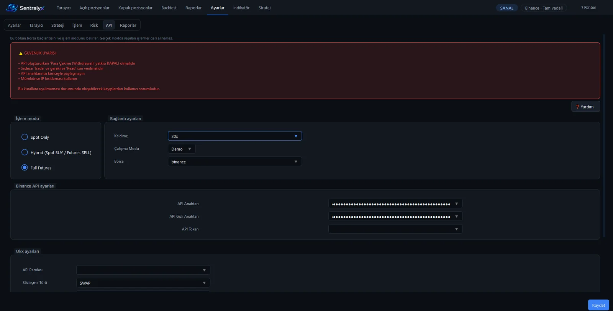

Настройки
Настройка торговой системы
Подключение к бирже, режим торговли, плечо и настройки риска — в одном месте. API-ключи шифруются ключом, привязанным к устройству, и хранятся локально.

Реальный экран приложения, снят в виртуальном режиме.
Подключение, режим и риск
Настройки разделены на вкладки: Настройки, Сканер, Стратегия, Сделки, Риск, API и Отчёты.
Безопасный ввод API-ключа
Предупреждение на вкладке API прямо говорит, что делать: вывод средств выключен, только торговля и при необходимости чтение, не передавать ключи и по возможности ограничение по IP.
- Ключи шифруются ключом, привязанным к оборудованию
- Файл настроек на другом устройстве не расшифровать
- Для OKX также нужна API-фраза

Режим торговли, плечо и биржа
Выберите только спот, гибридный (BUY на споте / SELL на фьючерсах) или только фьючерсы; задайте плечо и биржу.
- Плечо: 1x, 2x, 3x, 5x, 10x, 20x
- Биржа: Binance или OKX
- Окно подтверждения при переходе в реальный режим

Настройки риска
На вкладке «Риск» задаются дневной лимит убытка, максимум открытых позиций, максимальная длительность позиции и защита прибыли.
- Дневной лимит убытка (USDT)
- Максимум позиций и длительность
- Трейлинг-стоп и безубыток

Что есть в настройках?
Безопасность на первом месте.
Зашифрованные API-ключи
Шифруются ключом, привязанным к устройству, и хранятся локально.
Вывод средств не нужен
Приложение рекомендует отключить разрешение на вывод.
Режимы торговли
Только спот, гибридный или только фьючерсы.
Плечо
Варианты от 1x до 20x.
Блокировка режима
Пока открыта реальная позиция, тип торговли и биржу изменить нельзя.
Лимиты риска
Дневной лимит убытка, максимум позиций и длительность.
Частые вопросы
Где хранится мой API-ключ?
На вашем компьютере, в зашифрованном виде — ключом, полученным из аппаратного идентификатора устройства.
Какие разрешения API включать?
Достаточно торговли и при необходимости чтения. Разрешение на вывод должно оставаться выключенным.
Как включить реальный режим?
Реальный режим можно выбрать после ввода API-ключа; при переходе появляется окно подтверждения. В версии Free реальный режим заблокирован.
Связанные страницы
Проверьте стратегию в виртуальном режиме уже сегодня
Скачайте приложение, соберите стратегию и посмотрите, как она работает, без реальных денег.